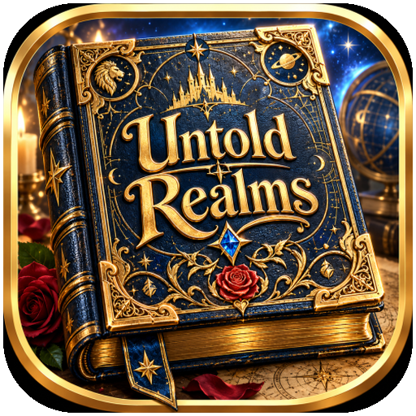

ARCADE
Number Run: Pro Edition
Split-second number choices, cascading combos, and one-more-run energy.
Available on Google PlaySee Number RunSome oaths outlive kingdoms.
A dark-fantasy action RPG across the Greyfen Marches. Build your character, cross a connected world, fight with timing and stamina, follow factional conflicts, and decide what should become of a broken crown.
Greyfen is built as a place rather than a sequence of menus: roads between settlements, authored interiors, combat encounters, quest state, faction pressure, and decisions that remain visible later.
The present build is an offline Android RPG with locally bundled artwork and audio. The details below describe what is actually in the project now.
No Internet permission is requested by the current build.
Play begins without sign-up, login, or a Caulderon cloud profile.
Autosaves, manual saves, settings, quest state, and character progress live in app-private storage.
The current build contains no AdMob or other advertising SDK.
No Google Play Billing integration or paid virtual currency is present in this build.
Artwork and WAV audio ship with the game; legal pages disclose AI-assisted visual assets where applicable.
Product-specific documents matched to the current build.
Local data, Android backup behavior, and the absence of network/advertising SDKs.
→Terms of UseLicense, saves, content, intellectual property, and governing law.
→SupportSaving, performance, camera options, recovery, and bug reports.
→Legal & LicensesOwnership, AI-assisted art disclosure, local audio, and software notices.
Split-second number choices, cascading combos, and one-more-run energy.
Available on Google PlaySee Number Run
Six self-contained campaign worlds with persistent RPG systems and remembered endings.
In developmentSee Untold Realms